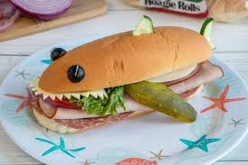

How to Make a Sub

This tutorial follows a simple classic. This variation will be vegetarian but feel free to add any ingredients of your choice!
Inredients
- French Bread
- Chopped Lettuce
- Spinach
- Tomato
- Cucumber
- Sliced Provalone
Steps
- Chop tomato and cucumber
- Open bread and lay all ingredients
- --optional--Toss open sub into oven at 350 for 6 minutes
- Enjoy!
Back